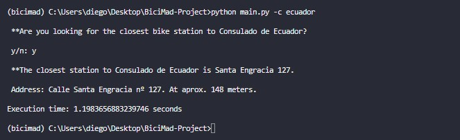

Go back
BiciMad project for IronHack
2022
GitHub link for the project (only for the courageous!).
This one is interesting.
Back in January of 2022 I was starting the IronHack’s bootcamp. This was my first contact with Python and data… pretty exciting.
The idea for the first project was quite simple in concept, but quite challenging in practice. It consisted of a program that would return the closest ‘BiciMad’ station (like the OV-fiets here in The Netherlands) to a given consulate/embassy within the city of Madrid. It was simple in concept, because you could pretty much compare the whole database and get the results, but challenging because getting those results would take forever. And I really mean it, we are talking about minutes of processing by the computer. Can you imagine looking on Google Maps for the nearest place and having to wait minutes before you get an answer? Not cool.
How I solved the problem
Luckily, I came up with (what I consider to be) a really interesting solution by that time.
The main issue with that basic algorithm was that most computing entailed a pointless calculation that compared the distance to every single BiciMad station in the city, which was aggravated by the fact that calculations were based on coordinate data (extra computing). And then returned the one with the shortest distance to the given consulate/embassy.
What if before executing said calculations the program could get rid of those that were absurdly far, or maybe just ‘far’?
My solution consisted basically in slicing the dataframe. Given a certain ‘threshold’ (as I like to call it) in meters, the program would then calculate the coordinates around the consulate/embassy and then chop all of those data rows that were outside the range. Let me show you:
.png)
This is a simplified representation of how the problem looked like. In the center of the image we have the Russian Embassy. Around the embassy we can see (yellow signs) ‘all’ of the possible BiciMad stations. Of course, in the actual data frame there's many more than these, around 270.
As I said, the idea was to get rid of those that were obviously not going to be the closest station, like the ones in the corners. That way it would not be necessary to calculate the distance to the embassy, greatly reducing the computing time. As I said, the solution consisted of: firstly, deciding what the threshold should be to disregard the ones that fell outside of it. Second, calculating the coordinates of said boundaries. That is to say, top and bottom latitude, eastern and western longitude. Utterly defining an enclosed square-shaped area around the embassy (boundaries not alined in this illustration I made):
.png)
Anything that fell outside this area would be disregarded before any calculations related to distance between the embassy was performed. This proved to be a great way to narrow the database and save a lot of computing time. Instead of calculating distances for 270 stations, it would only do, say, for 9. Reducing the amount of work, in this case, by 96,6%. In fact, my code could calculate the closest BiciMad station to every single consulate and embassy in Madrid in tens of seconds. The feeling when I got the thing to work was one of the most defining experiences of accomplishment I’ve ever had. And it was great to see how much people applauded this solution in class. I felt great that day.
An example of how it worked:

The program used Python’s argparse library to take some parameters. Like -c for consulate and -e for embassy. And then, of course, the country that it represented.
The way I achieved the prediction for the country name was with the FuzzyWuzzy library. The rest was simply executing the code. In here we can see that it works correctly:
The difference in distance is due to the fact that the program calculates a straight line between origin and destination.
The ugly part
As I said, this was my very first big project with Python. Which meant that I had no idea of what ‘clean readable code’ meant. It is an absolute mess. A complete nightmare of a code. It takes courage to look through the code I made for that project, so if you decide to look at it, I can’t guarantee you'll come back being the same person that clicked on the link. Although today I see it as proof of how much I’ve improved over time.